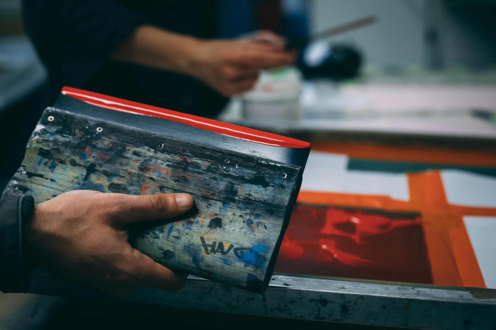
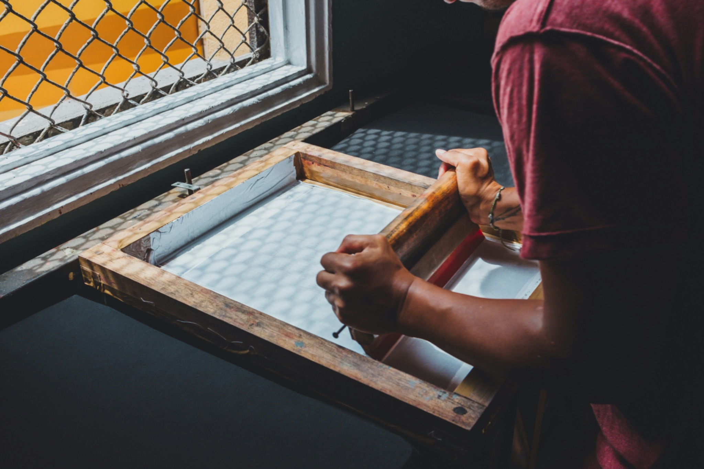

01 · MAKE
Artist and maker merchandise
For a design-led garment, explain the illustration or logo, intended hand feel, garment color, print scale, and first-run quantity.
Ivywild · Custom apparel
Custom screen printing Ivywild Colorado Springs for creative businesses, events, teams, and merchandise. Start with artwork, garments, quantity, and deadline.
A creative-project quote should start with the outcome
Ivywild’s creative and community-oriented energy makes it a natural context for custom merchandise, event shirts, staff apparel, and small brand projects. Those projects succeed when the first conversation covers the garment experience as carefully as the artwork itself.
ARK serves Ivywild from Colorado Springs. Use the quote form to share the creative direction, the kind of garment you have in mind, the print coverage, size range, quantity, and timing. That gives the production decision a useful foundation.

Make the creative brief production-ready
The following examples are planning prompts, not statements of a relationship with an Ivywild venue, market, business, or event.
01 · MAKE
For a design-led garment, explain the illustration or logo, intended hand feel, garment color, print scale, and first-run quantity.
02 · HOST
For a gathering, include the date, participant count, sponsors or back-print needs, garments, and the distribution approach.
03 · WORK
A team program benefits from clear logo placement, role variations, garment durability, and a plan for future hires or reorders.
Turn the concept into inputs
The design is important, but it is only one part of a production brief. The garment, coverage, quantity, timeline, and intended use all influence the right method.
Quote-first workflow

Choose the finish after the brief
A line-driven illustration, a soft retail graphic, a bright full-color image, and a simple staff mark ask different things of a print process. Use the quote to compare screen printing, DTF, water-based, discharge, or embroidery in relation to the actual design.
Use the quote form to describe the project. These service pages can help you understand the production conversation before you submit it.
Questions before you quote?
Short answers to the decisions that make a custom-apparel request easier to scope.
Yes. A rough concept, logo, or visual reference is useful. Include the garment direction, quantity estimate, and desired timing.
Yes. Note the garment color, artwork coverage, desired hand feel, and quantity so those options can be reviewed against the project.
Include every planned garment color and design variation in the request. Those choices can affect the print approach and quote.
ARK Screen Printing Studio is based in Colorado Springs and serves Ivywild apparel projects through a quote-first workflow.
Start your project
Share your artwork, garment direction, quantity, print locations, and deadline. ARK will turn those details into a clear production recommendation for your project.